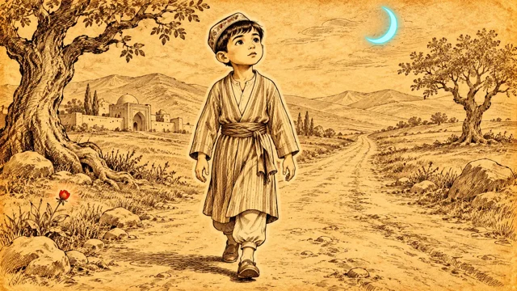

1-sahna — rasm, 16:9 (yotiq)
Biriktiring:

Kirish (0:00–0:12)
Bahor kechqurun, uzun yo'l, gullagan daraxt. Uzoqda kichkina Alisher yura boshlaydi.
Horizontal 16:9 image, wide shot, eye level. Attach the approved image of the boy Alisher (keep him exactly the same boy: the same face, big dark eyes, embroidered doppi cap with the same pattern, striped cotton shirt-robe with a sash, soft leather shoes). Style: hand-drawn ink pen sketch illustration on aged warm yellow parchment paper, sepia-brown ink lines with fine cross-hatching shadows, like an old storybook drawing or a classical Persian miniature sketch; the main character is drawn slightly brighter than the background, almost white-cream, with a thin soft white outline glow hugging the edges of his silhouette like a paper cut-out edge; nothing floats above his head. The background stays in brown ink lines on the yellow paper. Only two small neon accents in the whole frame: a soft neon cyan-blue crescent moon in the sky and one small red tulip glowing soft neon red at the roadside; nothing else is coloured. Scene: SPRING, early evening. A very long empty country road goes from the bottom of the frame to the far horizon between low hills; the same old tree on the left is covered with small white blossoms; the old city with a dome sits far behind on the left. Far away on the road, small in the frame near the horizon, the boy Alisher stands with his back to the city and his face toward the viewer, one foot forward, just about to start walking toward us. Horizontal 16:9. No readable text, no letters, no numbers, no logos, no signature, no watermark, no subtitles.